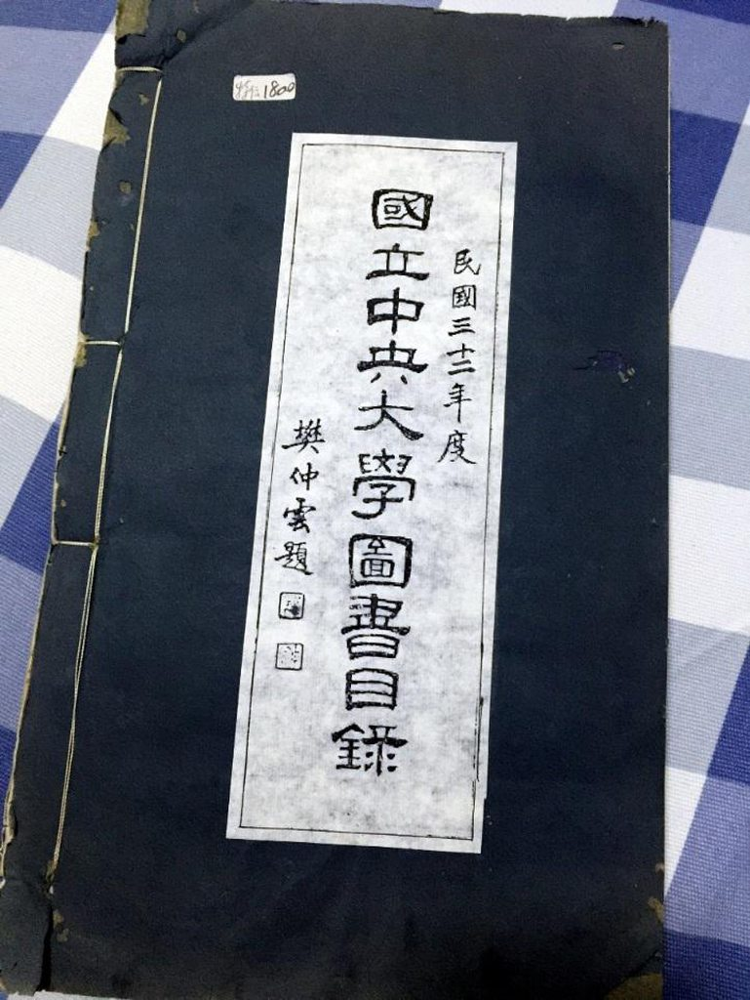
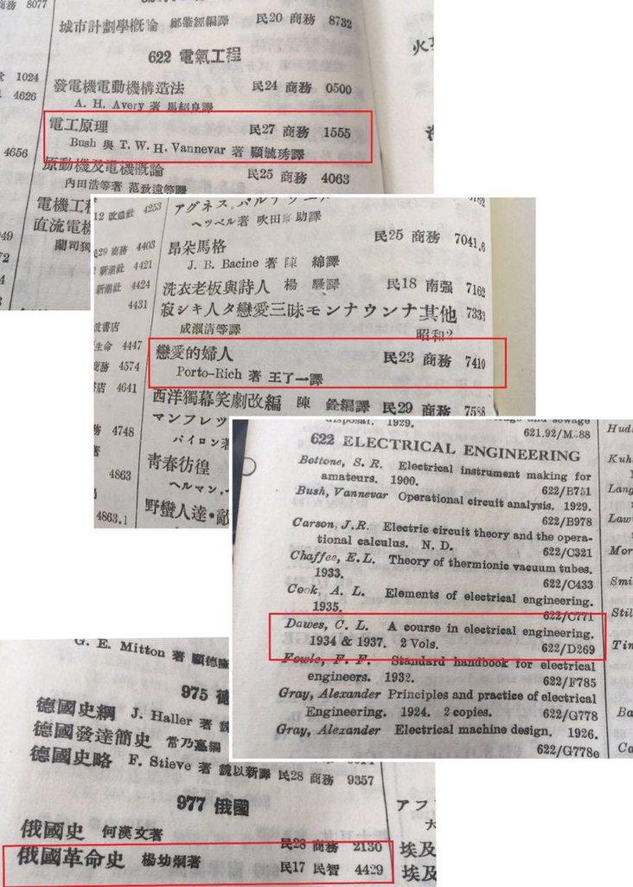
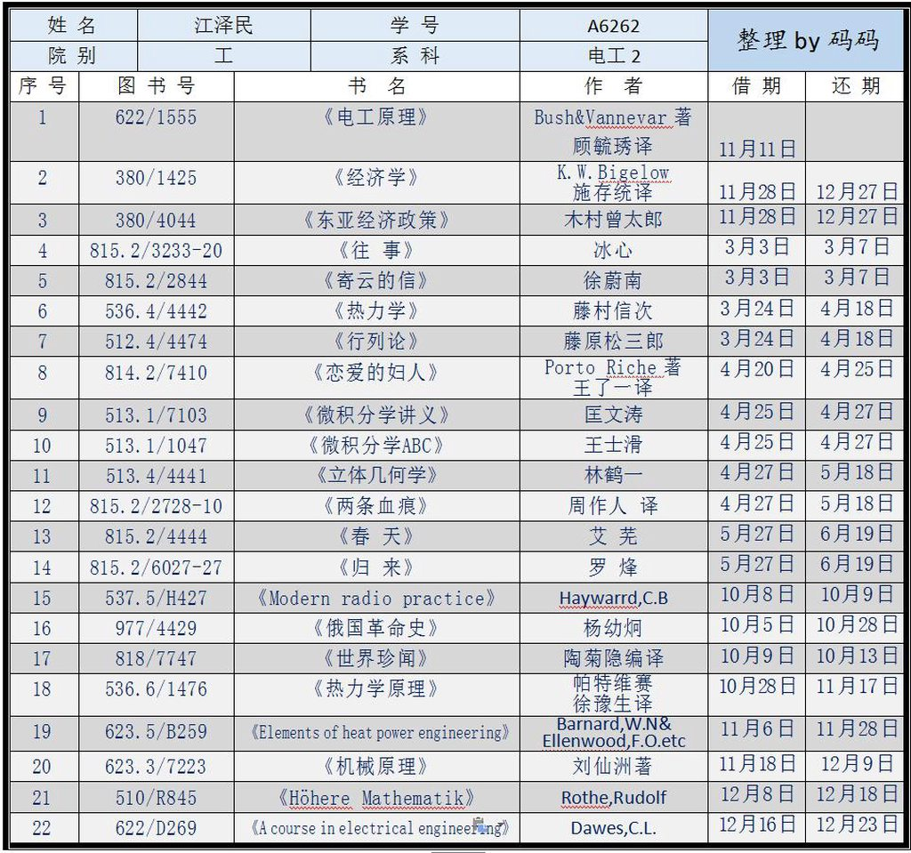
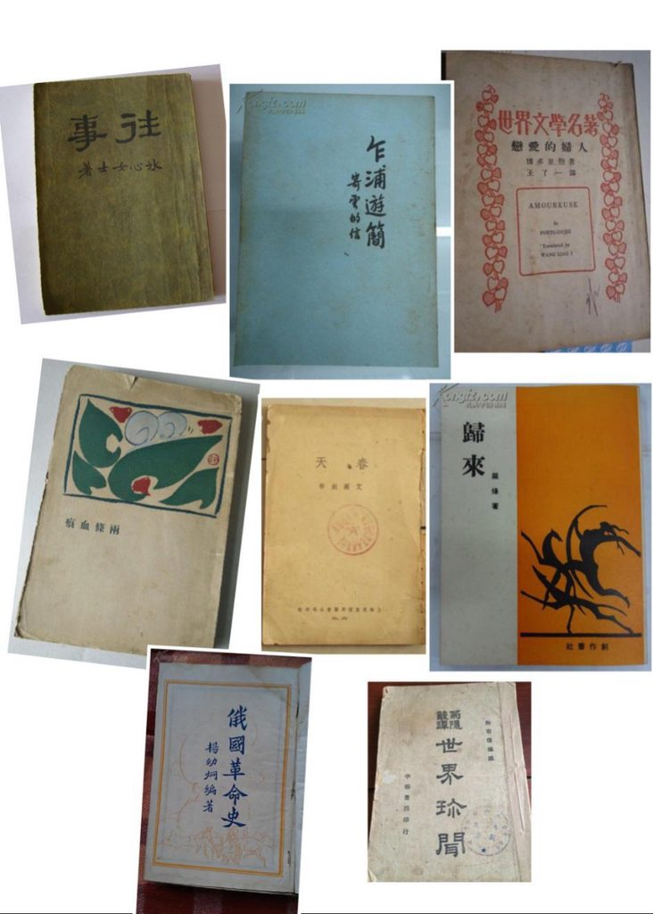
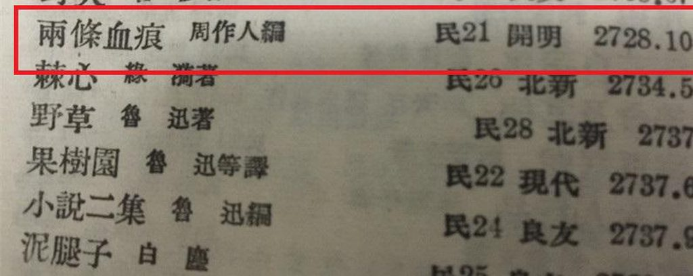
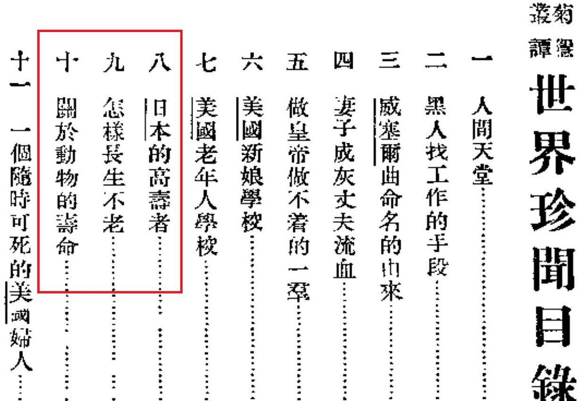

在南京，顺着汉口路走，就到了南大校门口，穿过一段满是梧桐树漏下的碎阳光，右手边就是图书馆，三十年前的夏天，20出头的赵益每天的工作就是在这里的特藏部整理档案，当整理到一张写有“JZM”的借书证时，“并无特别处理”，而是和其他档案放在一起。当时是1986年，江正在南京以东300公里的上海任市长。三十年后，赵益已经是南京大学文学院的教授，他跟笔者回忆起当时的情境时不断强调，“没有传奇色彩，并无经过，只是发现”。
南大百年校庆前，图书馆旁边建起校史博物馆，随着这张借书证主人的不断晋升，这张证并没有像其他学生的档案那样被移走，而是继续留在了校史馆内，并被放在了显眼的位置。这张借书证上分“姓名”、“学号”、“院别”、“系科”，右边还贴着一张江的证件照，当时他并未戴眼镜，证件主体则是频繁的图书借还记录，包括书号、借期和还期，用红黑两种墨水笔标记得一目了然。
南大校史馆里的借书证
一个人的全部会映射在他所读的书上，有时这种映射是如此完整而精妙，而借书证和普通书单不一样，书单是分享行为，分享难免不包含展示的成分在内，借书证更单纯，一如学生时代的恋爱，单纯、纯粹，从某种角度上说，借书证暴露的不仅仅是一个人的喜好——而是你是一个怎样的人，你的喜好你的品位你的心路历程，都在人面前一览无余。江本人也没想到自己的借书证会在四十多年后被人翻出来，这是他“一丝不挂”的“闺房”，出于同是一名爱书人的好奇，更多也是窥私欲的作祟，笔者吃了一个月泡面斥重金购入了江入学那年的南京中央大学的图书目录，封面还有当时校长樊仲云的题字。我就像一个莽撞的后生，假装不小心的闯入江的秘密花园一探究竟。

1943年南京中央大学图书馆藏书目录
对爱读书的江来说，1943年入学是件幸运地事情，南京中央大学“复校”两年后，搬迁到条件较好的金陵大学校园内，继承了金大图书馆，虽然比不上世界藏书量最大的梁家河图书馆，但据1936年申报馆作过的一次全国大学图书馆藏书量的调查，藏书量超过20万册的仅有5所，金大图书馆即为其中一所，而西迁前金大图书馆文献总藏量已达339184册，加之中大“复校”三年来的一些采购，呈现在年青的江面前的是战时藏书量首屈一指的图书馆。
下图为对比图书目录上的书号还原出的江一年时间内借还书记录。

对比记录

整理后的“江氏借书证”
江第一本书是11月11日借的，这一天去图书馆借书确实是件挺孤单的事，巧合的是五十年后在同一个校园里，这一天几个男生庆祝单身，并逐渐在南京高校流传开来，成为光棍节的起源。江借的第一本是《电工学原理》，译者为顾毓琇老先生，光棍节这天书架上偶然的邂逅，让两个人生开挂的人，纠缠一生，三年后在交大，顾毓琇成为了江的老师，顾回国期间江还邀请他去中南海做客，97年访美江还特意去费城看望了他。细究借书日期，还可以发现专业类图书多在秋冬天借阅，而《往事》、《寄云的信》、《恋爱的妇人》、《两条血痕》、《春天》、《归来》这六本纯文学的书则全部在三、四、五三个月内借阅，看来春天容易让人变得柔软。

江所借部分图书封面
江自小接受的是传统私塾教育，中学阶段在扬中接受的是西式教育，在那里他爱上俄罗斯文学和西方文学，起码在刚入大学的第一年的借书记录里看，像所有十七八岁的青年一样，江开始对新文学乃至革命文学产生了兴趣。冰心的《往事》当时付梓时为纯散文集，包含六篇散文，语言隽永流畅，成就高于早期诗歌和小说。《寄云的信》则为海派作家徐蔚南寄给妻子的书信集，平素写作“喋谈性欲”的他却在书信中表现出了清新脱俗。
《恋爱的妇人》这本书值得一提，这是借书证上唯一的一部戏剧，这部剧很小众，法国的心理剧作家Porto Riche所著，著名语言学家王了一翻译，三幕剧的剧本主要讲述男主替朋友向一个少女表白，谁知少女爱上他了，婚后她爱他的激情不减，导致男主厌烦“用恋爱的方式来专制人家，精神上，物质上，都受痛苦”，便将她拱手让给朋友，事后男主却痛苦万分，最终还是回归家庭成了爱情的俘虏。所有好的文学都是悲剧，爱人是痛苦的，被爱也是痛苦的，不知江在他人的故事里是否流下了自己的泪，但后来江似乎并未被这渗出纸面的爱情虚无主义影响，其婚姻长跑到今年已是第66个年头。

《两条血痕》则为日本短篇小说、剧本合集，周作人在日本文学翻译方面对其他译者来说几成碾压之势，其特有清隽幽雅略带涩味的味道为作品打上了周氏印记。有点意思的是，看图书目录，江是在一堆鲁迅作品里选择了他的弟弟，结合以上四本书来看，小清新的写作风格是江这一阶段的偏爱。
《归来》是东北作家罗烽的中篇小说集，其与妻子白朗出现在了电影《黄金时代》里。江这一年的书单不光都是阳春白雪，艾芜的《春天》是唯一偏乡土文学的，刻画了南方农村的图景，含蓄克制，尚未像抗战胜利后人物刻画的脸谱化。而杨幼炯的《俄国革命史》详述了俄国革命的经过，那几年江对发生在遥远中国北方的革命产生了兴趣，《世界珍闻》是民国名记陶菊隐收集整理的“西方国家”猎奇文章，翻看这本书的目录，我们也可以看到当时的江已经关注一些如何保持长寿的文章。

细看这些书单上的作者，为左联或近左联的就有罗烽、冰心，而艾芜是共产党员，施存统更曾担任第一任团中央书记。借书证上之外，江的室友回忆说他们最爱读的是1934年出版的艾思奇写的《大众哲学》，也在被窝里打手电筒读瞿秋白的《赤都心史》，这就不难解释他在46年4月，国府形势仍优的情况下选择加入了共产党。
人是不会变的，穷其余生都在巩固早年形成的“偏见”，吃过的东西爱过的人读过的书都已构成了你的骨架，以后再学新知遇新欢，但一有机会还是会回去。很多年后，一次记者招待会上，当被问及他有何爱好时，江回答说：“作为一个知识分子，我喜欢读书。我阅读与我工作有关的东西：一是机械，二是电子。“ 后来，江还把其苏联导师所著的《机械制造厂如何合理利用电力》一书翻译成中文，此刻他肯定想到当年在图书馆里感激为他带来新知识的译者们。同样他会专程前往马赛参观大仲马创作基督山伯爵的地方，去巴黎蒙玛特高地希望为“茶花女”扫墓。在借书证被发现的同一年，86年8月16日，《解放日报》选登了一幅漫画家为时任市长的江画的漫画像。漫画的标题是“书迷江泽民”。据信，江在上海的市长办公室里就藏书愈3000本。江的阅读经历自始而终，令人信服，而突兀的抛出庞大书目、追求磅礴气势是一种恶劣的美学倾向，读书不是打架，可以倚多取胜。
解放日报上江的漫画像
回望这张借书证，你会发现江每个月都有借书，一次两到四本，几无断绝，这样的阅读习惯伴随一生，文革中，无论在武汉被撤职接受批斗还是河南渤海农场“五七”干校接受再教育，江始终手不释卷，甚至在探望同样被批斗的汪道涵时，还建议他读读莎士比亚，读书最好的目的就在于此，你会发现凭借自身阅读构建起来的小世界，能以体恤式的温柔，消解自身的苦难。